Agent-centric-real-to-sim · 归档于 2026-11-05
ACDC
Automated Creation of Digital Cousins for Robust Policy Learning
归档到 Agent-centric real-to-sim：从一张真实照片全自动建可交互仿真场景，再训 policy 回到真机；第二相关 Robot learning in simulation（sim-to-real 的训练分布）。
TL;DR
- Problem
- digital twin 贵，而且只对一个实例：sim 里 100% 的 twin policy 上真机只有 25%（Fig. 5）；不看真实场景的随机化又太散。
- Idea
- 不复刻，只保留几何和语义 affordance：一张 RGB → ACDC 从 BEHAVIOR-1K 检索出多个 digital cousin 场景 → 脚本自动采 demo → BC policy → 零样本回原场景。
- Result
- 真实 IKEA cabinet 开门，20 次：Cousin 90% vs Twin 25%（Fig. 5），这是唯一有真机成功率的任务。sim 里（下面都是 cousin vs twin）在 twin 自己的 asset 上基本持平（Door 93.2 vs 90.0），离 twin 远时差距拉大（Drawer 84.2 vs 33.0，Table 4）；Putting Away Bowl 在 twin 上 twin 赢（8.6 vs 16.2）。
Problem
一个 twin 只是训练分布里的一个点，真机和它差一点，policy 就到了分布外
Running example · 后面每个 stage 都跟着它走
§3.4 的真实厨房：一张 RGB 照片（项目页 no-cut 视频里叫 test_img.png）：冰箱、吊柜、地柜、微波炉，ACDC 切出 8 个物体（Object 6 / 8 · cabinet_2）→ 想要：一个只在 sim 里训练的 policy，零样本打开真实吊柜的门。
这个厨房论文没给成功率。同一任务 Door Opening 有定量结果的是一台 IKEA cabinet（Fig. 5），所以下图的数字来自那台柜子。
flowchart TD IN["例子输入
一张厨房 RGB
任务：开柜门"]:::example IN --> A1["Digital twin
建同款柜子
只在它上面训"] A1 --> AX["上真机失败
sim 100%
real 25%"]:::gap IN --> B1["Twin + ↑DR
同一 twin
加大 pose、scale"] B1 --> BX["两头都丢分
sim 70%
real 55%"]:::gap IN --> C1["All Assets
最近 3 类
asset 全部用上"] C1 --> CX["分布太杂
sim 77.7 vs 90.0
无真机数字"]:::gap IN --> D1["URDFormer
单图生成
articulated 场景"] D1 --> DX["要人工 bbox
类别固定
只有定性 Fig. 12"]:::gap
第 1、2 条：Fig. 5，IKEA cabinet，sim 50 次、real 20 次。第 3 条：Table 4，Door Opening 在 sim 的 twin 上，6 个 run 的均值（我算的），Fig. 5 没测这一组，也不是同一台柜子。第 4 条：B.4 定性比较。"坏在哪"是推断：twin 失败的原因，论文只给假设（§3.3：asset modeling 和 sensor perception errors），没有归因实验。
根本问题：twin 只覆盖一个点，建模和感知误差把真机推出这个点；不看场景的随机化又铺得太开，样本质量下降。 这篇的切入点：把训练分布收在真实场景周围：按 DINOv2 特征距离取最近的几个 asset，外观可以不同，关键 affordance 要在。
Related work
| 相关工作 | 解决什么 | 怎么解决 | 和本文的区别 |
|---|---|---|---|
| 同一问题 · 别的解法 | |||
| Digital twin 流水线 RialTo、Ditto in the House、Part-level reconstruction | 给一个真实场景建可交互副本 | 扫描 + 程序化或人工辅助建物体 | 仍要人工，只覆盖一个实例 → 本文零人工，一张图出多个 cousin |
| URDFormer Chen et al. 2024（B.4 定性比较） | 单张 RGB → articulated 场景 | inverse graphics，从照片合成贴合纹理 | 类别固定、靠准确 bbox（常要人工）→ 本文不限类别、全自动，代价是不改 asset 纹理 |
| 策划或程序化场景集 BEHAVIOR-1K、AI2-THOR、Habitat 3.0、ProcTHOR、Holodeck | 给 policy 大量多样场景 | 人工策划或程序生成 | 和要部署的真实场景无关 → 本文每个 cousin 都以一张真实照片为锚 |
| 相似做法 · 别的问题 | |||
| Domain randomization RetinaGAN、RMA、dynamics randomization、DeXtreme | 提高 sim-to-real 鲁棒性 | 随机化视觉或物理参数 | 随机时不看目标场景 → 本文只在 cousin 内随机，§3.2 称为 conditional randomization |
| Demo 合成（本文沿用这一做法） CLIPort、VIMA；TAMP；MimicGen、IntervenGen | 自动造机器人轨迹 | primitive + 仿真特权信息，或扩增人类 demo | MimicGen 一类要人类种子 demo → 本文零人类 demo，轨迹全部发生在从照片长出的 cousin 里 |
来源：论文 §1、§4 Related Work、B.4；未另行检索。
Level 1 · Big picture
不复刻场景，而是围着真实场景采一小团相似场景，用这一团训 policy
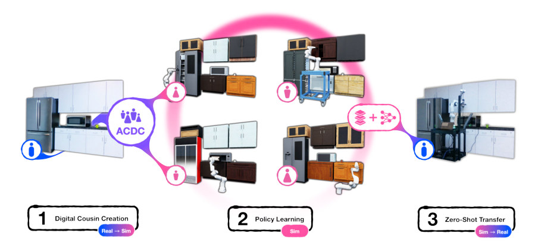
怎么读这张图
- 左，蓝色 i 图标 + "1 Digital Cousin Creation · Real → Sim"：输入的真实厨房：不锈钢冰箱、白色吊柜和地柜、微波炉。
- 紫色 "ACDC" 节点 → 四个粉色人形图标：四个 cousin 厨房。冰箱和柜子款式、颜色都变了（木纹、黑、红），布局不变。这就是 twin 和 cousin 的差别。
- 粉色圆环 + "2 Policy Learning · Sim"：四个场景合成一个训练分布，Franka 在每个场景里采 demo。
- 右，数据 + 网络图标 → "3 Zero-Shot Transfer · Sim → Real"：policy 不微调，直接在原厨房开柜门。
| Digital twin | Digital cousin | |
|---|---|---|
| 定义 | 显式复刻一个真实对象 | 不复刻，只保留相似的几何和语义 affordance |
| 例子（§1） | 同一款 cabinet | handle 和 drawer 排布相似，材质和细节可以不同 |
| 一个场景能有几个 | 1 个 | 多个 |
| 和真实场景的关系 | grounded | 也 grounded，这点和程序化生成不同 |
| 对 policy 的作用 | 只优化这一个实例 | 给出一个条件分布，覆盖误差和变化 |
flowchart LR I["Input
1 张厨房 RGB"]:::example --> M["ACDC
检索出多个
cousin 厨房"]:::win M --> O["Policy
sim 里训练
真机开柜门"]
Level 2 · Stages
5 个 stage：ACDC 三步造场景，后两步造数据和 policy
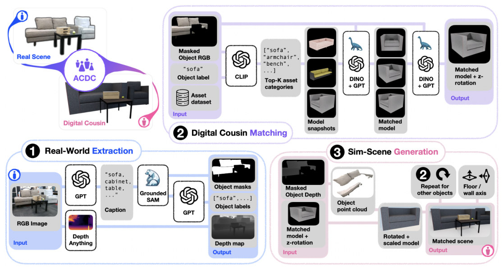
怎么读这张图
- 左上 "Real Scene" → "ACDC" → "Digital Cousin"：一句话版：真实客厅变成款式不同、布局相同的仿真客厅。
- ① "Real-World Extraction"：RGB Image 走两路：GPT → Caption → Grounded SAM → GPT 得到 Object masks 和 Object labels；Depth Anything 得到 Depth map。
- ② "Digital Cousin Matching"：Masked Object RGB、"sofa"、Asset dataset 进来；CLIP 选 Top-K asset categories；DINO + GPT 两轮收窄，先定 Matched model，再定 z-rotation。
- ③ "Sim-Scene Generation"：Masked Object Depth 变 Object point cloud，模型按它 Rotated + scaled；"2 Repeat for other objects" 回到 ②；再按 Floor / wall axis 拼成 Matched scene。
flowchart TD IN["Input
1 张厨房 RGB + K"]:::example --> S1 S1["1 · Real-World Extraction
8 个物体：mask + 点云"] --> S2["2 · Digital Cousin Matching
cabinet_2 → k 个 asset + 朝向"]:::win AS["Asset dataset
BEHAVIOR-1K，1 万+"] --> S2 S2 --> S3["3 · Sim-Scene Generation
多个可交互厨房"] S3 --> S4["4 · Demo collection
Open skill，只留成功"] S4 --> S5["5 · BC policy + 部署
真机零样本开柜门"] click S1 href "#stage-1" click S2 href "#stage-2" click S3 href "#stage-3" click S4 href "#stage-4" click S5 href "#stage-5"
点击 stage 展开 Level 3 细节；贯穿全程的尺子见 DINOv2 distance。
Level 3 · Details
每个 stage 的细节
Stage 1 Real-World Extraction 一张 RGB + 相机内参 → 每个物体的 label、mask、点云、像素
- Why：后面按物体检索 asset，所以要先把图切成物体，并拿到每个物体的 3D 位置和尺寸。
- Caption：GPT-4 列出图里所有物体。
- Mask：caption 喂给 GroundedSAM-v2，得到一组物体 mask。
- 对齐：再问一次 GPT，从 caption 表里给每个 mask 选 label：两个模型的说法要重新同步。
- 深度：Depth-Anything-v2 估出来，不用深度相机：作者观察到它在反光表面更稳，也能处理网络图片（§2.1、A.7）。
- 点云：深度图反投影成点云，按 mask 切成每个物体的点；DBSCAN 去噪点（A.7）。
- Articulated：同一步问 GPT 物体是否带门或抽屉（A.7）。
- 模型版本：real-to-sim 用 GPT-4o（A.7）；没有内参时可用 PerspectiveFields 估（B.2，Fig. 10、11）。
- 耗时：约 7 秒 / 物体（A.7）。
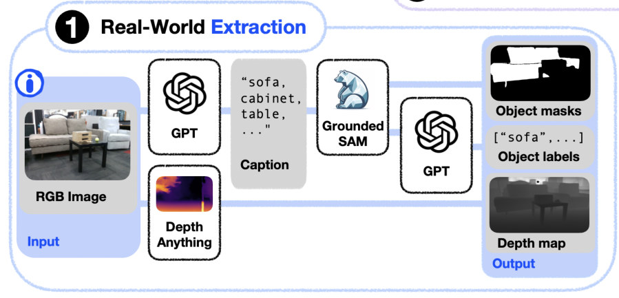
| 符号 | 白话 | 厨房里 |
|---|---|---|
| X、K | 输入照片；相机内参 | test_img.png |
| cj | GPT 列出的第 j 个物体名 | cabinet |
| mi、li | 第 i 个物体的 mask 和最终 label | cabinet_2 的区域和名字 |
| D、P | 估出的深度图；反投影得到的整图点云（P = D·K⁻¹） | 视频开头那团点云 |
| pi、xi | 第 i 个物体的点和像素 | 只留下这个柜子的部分 |
| oi | 四样打包的物体表示 (l, m, p, x) | 共 8 个 |
flowchart TD a["RGB + K
test_img.png"]:::example --> b["GPT caption
→ GroundedSAM-v2
→ GPT 选 label"] a --> c["Depth-Anything-v2
→ 点云"] b --> d["按 mask 切点云
8 个物体表示"] c --> d
Running example 在这一步
厨房切成 8 个物体，日志里能看到 cabinet_1、cabinet_2、cabinet_3。名字来自项目页视频的终端，不在论文里。
Stage 2 Digital Cousin Matching 物体表示 + asset 库 → 每个物体若干个 (asset, 朝向)
- Why：这是方法核心：不重建 mesh，而是从现成可交互 asset 里找几何相近的。
- 离线准备（A.1）：BEHAVIOR-1K 一万多个 asset；每个转一圈，从固定相机拍一组 snapshot，再加一张代表图；只做一次，可缓存。
- 为什么比 2D 图（A.1）：单视角有遮挡，点云配准和 FoundationPose 一类方法要完整点云，用不上。
- 第 1 层 CLIP：物体 label 对 asset 类别名，选最近的 kcat 个类别。
- 第 2 层 DINOv2：masked RGB 对每个模型的代表图，选 kcand 个候选。
- 第 3 层 DINOv2：再对候选的全部 snapshot 比一遍，选 kcous 个 cousin：每个是一个 asset 加一个朝向。
- GPT 精选（B.1）：DINOv2 先给 kmodel = 10 个模型让 GPT 挑；朝向给 kori = 4 个让 GPT 挑，少于 10 秒 / 物体，DINO 法约 60 秒。real-to-sim 全用 GPT 选朝向。
- Articulated 硬过滤（A.7）：带门或抽屉的物体只在 articulated asset 里搜，否则采不了开门 demo；可选门和抽屉数量阈值，real-to-sim 的 nearest cousin 设为 2。
- 朝向微调（A.7，可选）：按点云的 z 对齐最小 bounding box 再转一点，对棱角分明的家具有用。
- 耗时：约 20 秒选一个物体的一个 cousin（A.7）。kcat、kcand、kcous 的取值论文没给；实验里 cousin 数用 2、4、8。
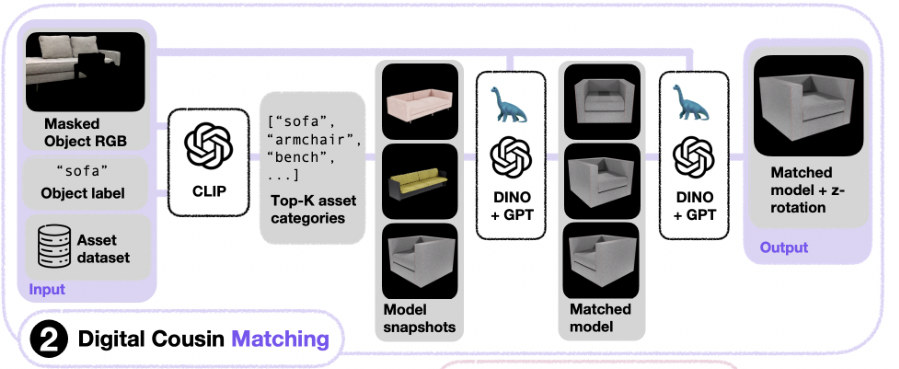
| 符号 | 白话 | 厨房里 |
|---|---|---|
| ti | asset 的类别名 | cabinet；B.3 还提到 bottom cabinet no top 这种难匹配的名字 |
| Ii、iis | asset 的代表图；它转动后的第 s 张 snapshot | 一款柜子的正面和各朝向 |
| kcat、kcand、kcous | 三层各留几个：类别、候选、最终 cousin | 日志里 cousin 编号到 #4 |
| Ac、qc | 一个 cousin 的 asset 和朝向 | 一款吊柜 + 面朝前的 snapshot |
flowchart TD a["CLIP
label vs 类别名
category: cabinet"]:::example --> f["articulated 过滤
doors / drawers 数量"] f --> b["DINOv2 选模型
再由 GPT 定 model"] b --> c["DINOv2 选朝向
再由 GPT 定 pose"] c --> o["cousin #0…#4
asset + 朝向"]:::win
Running example 在这一步
项目页视频终端，cabinet_2 这一段：[Object 6 / 8] Finding digital cousins for object cabinet_2, category: cabinet... → Articulated object being matched, filtering candidate models to valid number of doors / drawers → Selecting Top-… nearest models using DinoV2Encoder... → Selecting cousin #0 final model using GPT... → Selecting Top-… nearest poses using DinoV2Encoder... → Selecting cousin #0 final pose using GPT...。然后 #1、#2… 重复。视频分辨率低，Top 后面的数字看不清，所以这里不和 B.1 的 kmodel = 10、kori = 4 对比。
Stage 3 Simulated Scene Generation 选中的 cousin + 物体点云 → 物理稳定、可交互的完整场景
- Why：单个物体摆对了，合起来还会穿模、悬空；而且单视角只看到壁挂物体的正面，点云没有厚度。
- 放置：asset 的 bounding box 中心放到物体点云质心，再缩放到点云的范围。
- 墙和地：从第 1 步的点云拟合 floor 和 wall 平面。
- Mounting type（A.2，GPT 判断）：① Wall Mounted；② On Floor or On Another Object；③ Mixture：不挂墙但有一面贴墙，例如靠墙的书架、柜上贴墙的微波炉。
- On-top 推断（A.3）：按高度排序，bounding box 投影到 x-y；重叠超过两者较小面积的 70%，就判定高的在低的上面。
- 贴墙：转到一个面平行于墙，再缩放平移，让背面贴墙、正面不动。
- 去穿模：抬高到下面物体的顶上；最后逐对查碰撞 mesh，在 x-y 上推开。
- 耗时：少于 30 秒 / 场景（A.7）。
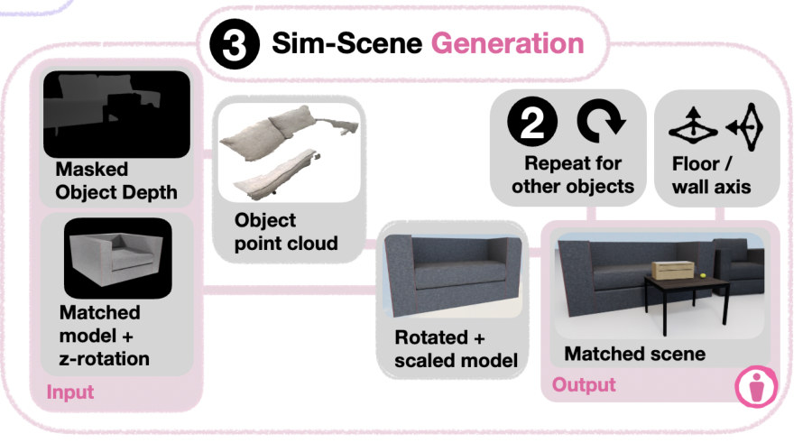
flowchart TD a["放置 + 缩放
bbox 中心 → 点云质心"] --> b["GPT 判 mounting
吊柜：Wall Mounted"]:::example b --> c["A.3 后处理
on-top、贴墙、去穿模"] c --> d["一个 cousin 场景
换 cousin 再拼一个"]:::win
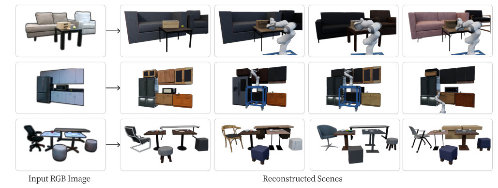
Running example 在这一步
视频里 cabinet_3 的 Candidate walls: ['backsplash_mask', 'wall_mask'] 就是 A.2 的做法：把墙的 mask 喂给 GPT，问它挂在哪面墙。吊柜贴墙不落地（Wall Mounted 是我按图的判断，日志没显示结果）；微波炉正是 A.2 举的 Mixture 例子。
Stage 4 Demo collection（A.4、A.5） cousin 场景 → 只含成功轨迹的 demo 集
- Why：整条链路要零人工，所以 demo 也不能靠人采。
- 四个 skill：Open、Close、Pick、Place，都用 ground-truth 仿真信息，可以串起来。
- Open 找把手：朝 link 射线，取距离最近的一批命中点的均值：假设最凸出的部分就是把手。
- Open 算轨迹：读 parent joint 的类型（prismatic 或 revolute）和位姿，解析算出把手轨迹。
- 工具：cuRobo 做无碰撞规划；GPG 从 asset 的采样点云生成抓取。
- 只留成功：rejection sampling，中途失败的 episode 不保存，所以可以放大随机化范围。
- 随机化：A.5 写明每个 episode 随机化机器人位姿、物体位姿和尺度。§2.2 还列了 visual、physics、instance-level，但论文没给范围。
- 数量：10000 条 demo 按柜子平均分；Putting Away Bowl 更长，用 2000 条（§3.2）。
flowchart TD a["Approach
无碰撞到把手前方"] --> b["Converge
直线到抓取点"] b --> c["Grasp
夹住把手"] c --> d["Articulate
按门轴走解析轨迹"]:::example d --> e["Ungrasp
松开"] e --> f["成功才保存
rejection sampling"]:::win
Running example 在这一步
每个 cousin 厨房里，Open 找到吊柜的把手和门轴，跑上面五步。Door Opening 只用 Open；Putting Away Bowl 是 Open、Pick、Place、Close 四连。项目页说厨房 policy 只用了 four digital cousins；厨房的 demo 数论文没写。
Stage 5 BC policy 和零样本部署（B.5） demo 集 → RNN + GMM policy → 真机执行，不微调
- 观测：末端位置、朝向、夹爪关节状态，加一个统一点云。没有 RGB。
- 点云：深度图转到 robot frame，机器人和背景 mask 掉；真机用 XMem 跟踪 mask，让 sim 和真机对齐。
- 夹爪：用本体感知和 forward kinematics 放一份预计算的手指点云；每点加一位 e 标记属于场景还是手指。
- 相机：一个 over-the-shoulder；Putting Away Bowl 再加一个肩部相机和腕部相机。
- 动作：6 维末端增量（位置 + axis-angle），经 IK 执行。
- 网络：2 层 512 维 PointNet，e 转 128 维 embedding，RNN（horizon 10，hidden 512），GMM 输出；AdamW。
- 数据增强：点云随机下采样、平移、加噪。
- 评测：每个 run 取最好的 checkpoint，跑 100 次。
- 我的推断：policy 看不到颜色和纹理，所以 cousin 外观不像照片也不影响它；"只保留几何和 affordance"之所以够用，和这个观测选择有关。论文没有 RGB policy 的对照。
flowchart TD a["深度 → 点云
去掉机器人和背景"] --> b["加手指点 + e 标记
FPS 下采样"] b --> c["PointNet → RNN → GMM
加本体感知"] c --> d["6 维末端增量
真机开柜门"]:::example
Running example 在这一步
Franka 站在厨房冰箱前，只看吊柜的点云和自己的手指，零样本伸手开门（E4 的视频）。
贯穿全程 DINOv2 distance：一把尺子，三种用法 两张图 → 一个"多像"的距离，选 cousin、排测试集、估 OOD
- 怎么算（A.6）：两张图过 DINOv2 取 patch 特征；每个 patch 找最近邻；距离是这些 L2 的均值，去掉最大的 10%。
- 怎么选 top-1：每个 patch 给它的最近邻候选投一票，票最多者胜；top-k 就是赢家移除后再选。
- 用法 1，选 cousin：Stage 2。
- 用法 2，排测试 asset：Fig. 4 的横轴：Door 0、7.25、7.59、18.93；Drawer 0、9.42、14.97、17.60；Bowl 0、14.17、14.44、17.73。
- 用法 3，OOD 代理（§3.2）：Door 上 twin policy 随距离下降：90.0、81.8、67.5、63.3（Table 4 均值）。
- cousin 之间要连续（B.6）：Drawer 的 4 个 cousin 距离 7.78、9.32、14.10、14.90，中间有断档，4-cousin policy 表现差；Door 是 6.49、7.51、8.13、9.66，平滑。
- 我的推断：这把尺子量的是外观和形状，不是任务难度。Door 从 7.25 到 7.59 只差 0.34，twin 掉了 14.3 个点；Table 5 里 rank 11 比 rank 12 和 OOD 都难（twin 2.7、44.0、50.3）。
flowchart LR d["DINOv2 distance
patch 最近邻均值"]:::win --> a["选 cousin
cabinet_2 的候选"] d --> b["排测试 asset
Fig. 4 横轴"] d --> c["OOD 代理
90.0 → 63.3"]
Recap：例子覆盖了论文的哪些 idea
| 论文里的 idea | 例子里在哪体现 |
|---|---|
| Digital cousin：保留 affordance，不复刻 | Level 1：四个厨房款式不同，布局相同 |
| 零人工三步流水线 | Stage 1–3：一张照片 → 8 个物体 → 多个厨房 |
| 离线 snapshot 库 | Stage 2：asset 的转动 snapshot 提前拍好 |
| CLIP → DINOv2 → GPT 分层检索 | Stage 2：cabinet_2 的日志 |
| Articulated 硬过滤 | Stage 2：只留门和抽屉数量合适的柜子 |
| Mounting type、on-top、去穿模 | Stage 3：吊柜贴墙，微波炉是 Mixture |
| Skill 自动采 demo，只留成功 | Stage 4：Open 五步 |
| 点云 BC policy | Stage 5：只看吊柜点云和手指 |
| Conditional randomization | E2、E6：All Assets 和加大随机化都不如 cousin（OOD 有例外，见 E6） |
| DINOv2 距离当 OOD 代理 | 贯穿全程：Door 上 90.0 → 63.3 |
| Zero-shot 回真机 | E3 IKEA cabinet，E4 这间厨房 |
Results
一个真实任务上 cousin 远胜 twin；sim 里 twin 自家 asset 上基本持平，离得越远差距越大
顺序同论文：E1 场景建得准吗（Q1）→ E2 sim 里比 twin（Q2、Q3）→ E3 真机（Q4）→ E4 全链路 → 附录 E5 怎么选 cousin、E6 比加大随机化。E1 比重建精度，其余比成功率，不比时间。最后的台账把 twin 和 cousin 的数字按来源列在一起。
Fig. 4、7、14 只画折线不印数字。文中带小数的成功率是我从 Table 3、4、5 的逐 run 数字算的均值，和折线一致。
E1单张 RGB 重建出来的 cousin，语义和空间对吗？§3.1、B.1、B.4
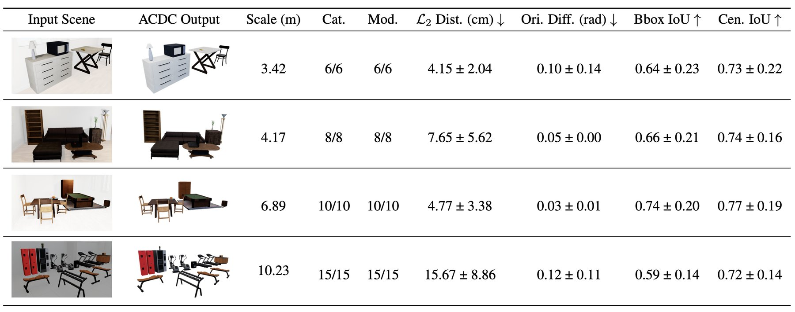
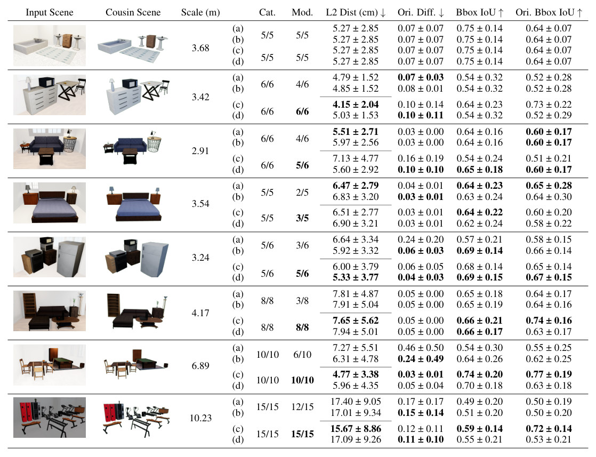
- 说明什么
- sim-to-sim 里语义和位置都保得住。Table 1 四个场景 Cat.、Mod. 全对；L2 4.15–15.67 cm；Ori. 0.03–0.12 rad；Bbox IoU 0.59–0.74。Table 2 的 8 个场景里，GPT 选模型的 Mod. 全部持平或更高。
- 在故事里
- 回答 Q1：cousin 场景够可信，才能往下训 policy。
- 指标
- Cat.：类别对的物体比例；Mod.：模型对的比例；L2：bounding box 中心距离；Ori.：朝向差；Bbox IoU：3D 框 IoU；Cen. IoU：中心对齐后的 IoU。
- 怎么评测
- 输入是仿真场景的一张 RGB；它的模型都在 asset 库里，所以这是有 ground truth 的最简单情形。
- 真实场景没有 ground truth，只有定性图（Fig. 3、9）：真实照片上的重建精度没有数字。
- 我核对：Table 1 是 Table 2 里 (c) 的 4 行，都是 Mod. 全对的场景；没选入的 4 个场景在 (c)(d) 下 Mod. 是 5/5、5/6、3/5、5/6。
- 我核对：Table 1 的 Cen. IoU 和 Table 2 的 Ori. Bbox IoU 数值相同（如 0.73 ± 0.22），两个表的定义却不同，论文没解释。
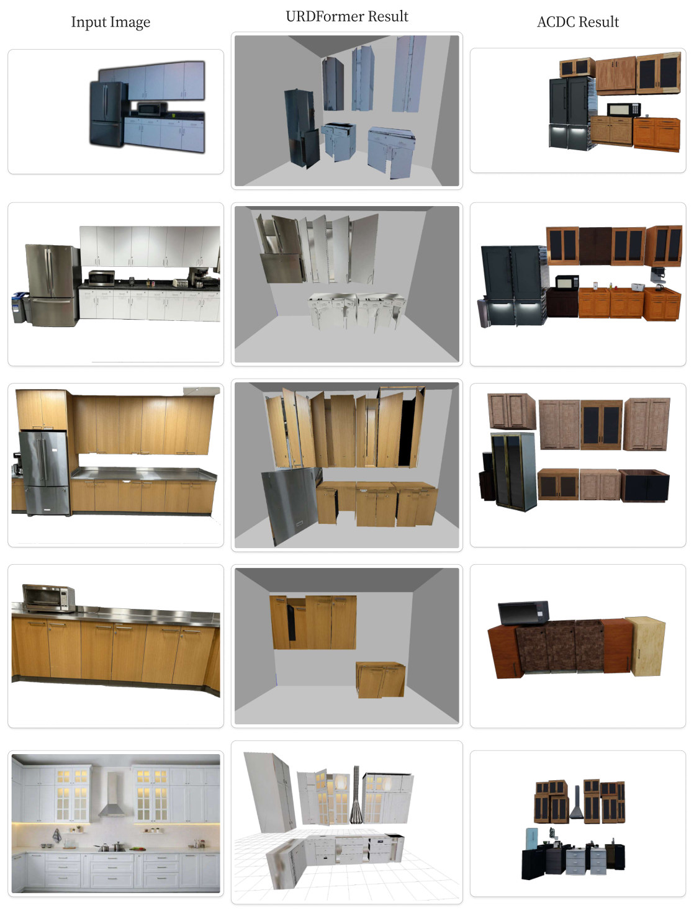
E2sim 里，cousin policy 能追上 twin 吗？没见过的柜子上更稳吗？§3.2、B.6
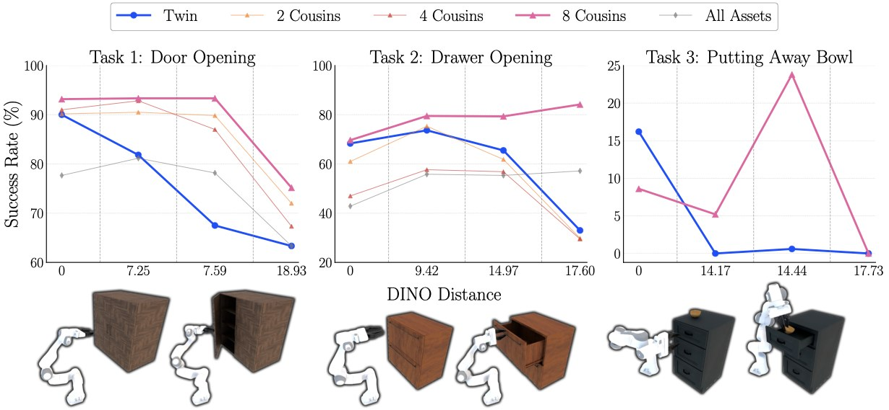
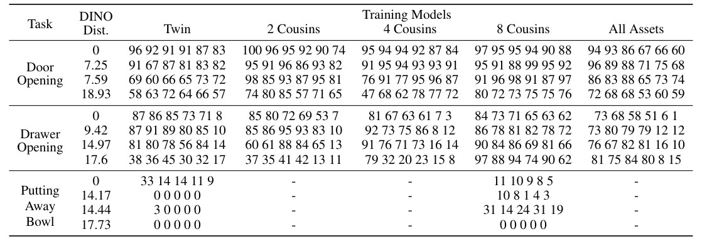
- 说明什么
- 在 twin 上基本持平，没见过的 asset 上更稳，但不是处处赢。
- Door：twin 上 8 Cousins 93.2 vs Twin 90.0；距离 7.59 时 93.3 vs 67.5；距离 18.93 时 75.2 vs 63.3。
- Drawer：twin 上 69.7 vs 68.3；距离 17.60 时 84.2 vs 33.0。
- Bowl：twin 上 8 Cousins 输：8.6 vs 16.2；距离 14.44 时 23.8 vs 0.6；距离 17.73 时都是 0。
- All Assets 在 twin 上明显更低（Door 77.7、Drawer 42.8）；远处会超过 Twin（Drawer d = 17.60：57.2 vs 33.0），但始终低于 8 Cousins。这是"cousin 是 conditional randomization"的证据。
- cousin 数量不是越多越单调：Drawer 的 4 Cousins 在 twin 上只有 47.0，作者归因于 cousin 距离断档。
- 在故事里
- Q2（持平）、Q3（更稳），以及"naive DR 不够"的 sim 证据。
- 指标
- 成功率，100 rollouts / run。论文没写开门或开抽屉到什么程度算成功。
- 怎么评测
- 10000 条 demo 按柜子平均分；Bowl 2000 条，且只比 Twin 和 8 Cousins（可用柜子太少）。
- 每个训练集 6 个 policy：2 组超参 × 3 个 seed；Bowl 只评 5 个 run。
- 测试 asset 都不在 cousin 训练集里；Twin 在 d = 0 是 oracle，§3.2 也这么说。
- 对 cousin 有利的一点（我的判断）：超参按"在 twin 上的成功率"选，所以 cousin policy 虽没用 twin 训练，却用 twin 选了超参。
- 绝对水平：Bowl 单 run 最高 33%，长任务远没解决。
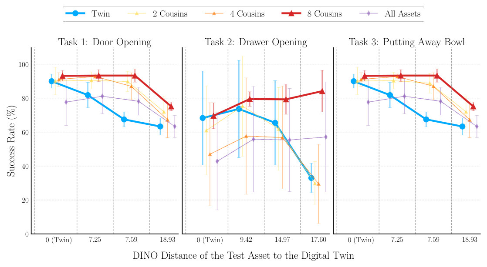
E3cousin policy 能零样本上真机吗？§3.3、Fig. 5
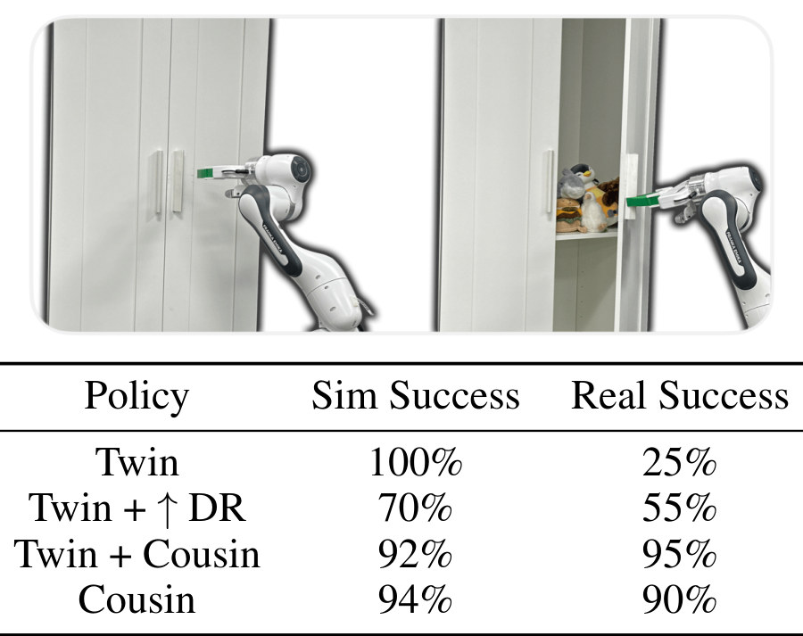
- 说明什么
- sim 分数不预测真机，cousin 数据把真机成功率从 25% 提到 90%。real：Twin 25%、Twin + ↑DR 55%、Cousin 90%、Twin + Cousin 95%。sim：100%、70%、94%、92%。Twin + Cousin 和 Cousin 差 5 个点，按 20 次换算就是 19 次对 18 次（我的换算），分不出高下。
- 在故事里
- Q4，也是 abstract 里的 "90% vs. 25%"。作者的解释是假设：更宽的分布能吸收 asset modeling 和 sensor perception errors（§3.3），没有实验拆开这两项。
- 指标
- 成功率，sim 50 次、real 20 次。没有置信区间，也没写真机成功的判定标准。
- 怎么评测
- 一个任务（Door Opening）、一台 IKEA cabinet、它的 twin 模型；policy 不微调。
- Twin + ↑DR：加大 pose、scale 随机化。Twin + Cousin：twin 和 cousin 数据合训。
- 论文没写用了几个 cousin；项目页视频字幕写 4 个。
- 论文没写 twin 怎么建、花多久，也没写 sim 列测的是哪个 asset（看上下文应是这台柜子的 twin，推断）。
- 观测是去背景点云和本体感知（B.5），外观差异大概已被挡在外面（推断）。
E4整条链路在野外厨房跑得通吗？§3.4、Fig. 1
- 说明什么
- 能跑通，但没有成功率。论文只写 "can successfully open the kitchen cabinet"，证据是视频。项目页补了一句：policy 只用 four digital cousins 训练。
- 在故事里
- 把 E1–E3 分开验证的环节串起来，是唯一真正从一张照片走到真机的实验。
- 指标
- 论文未报告（没有试验次数）。
- 怎么评测
- 一间真实厨房，开一扇吊柜门；项目页也放了失败视频，但没给失败比例。
- 这里没有 twin 对照：twin 和 cousin 的数字只在 E2、E3 里。
E5用什么挑 cousin：DINO 还是 CLIP，要不要 GPT？附录 B.1、Fig. 7、8、Table 3
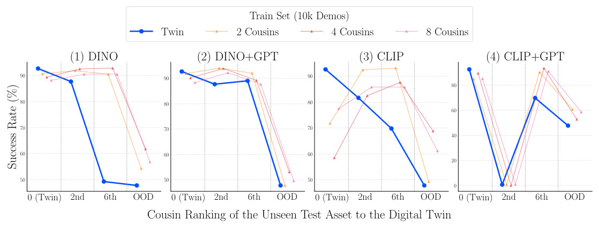
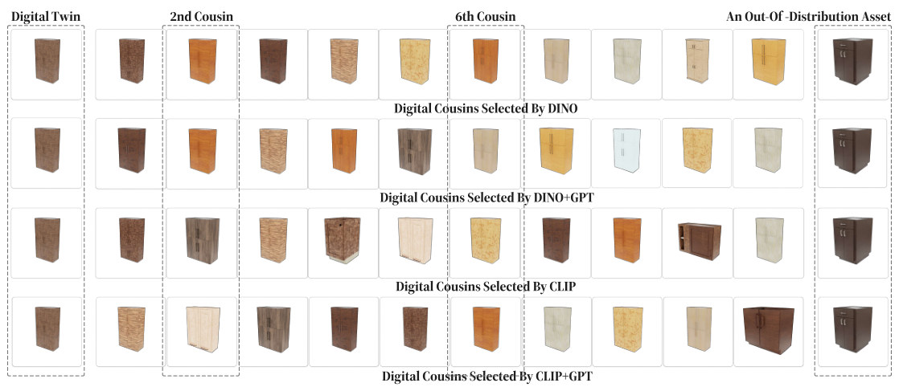
- 说明什么
- DINO 比 CLIP 好，GPT 让 cousin 更密。2、4、8 cousin 在 twin 上：DINO 90.7、89.3、88.2；DINO+GPT 91.8、90.2、88.3；CLIP 71.8、58.5、77.5。twin policy 在第 6 个未见 cousin 上：DINO 选的 49.3，DINO+GPT 选的 89.0，所以 DINO+GPT 选得更近，作者称之为 "dense sampler"。
- 在故事里
- 说明选 cousin 的尺子重要：几何相近才有用。
- 指标
- 成功率，6 个 policy，Door Opening。
- 怎么评测
- Table 3 里 CLIP+GPT 的第 2 个 cousin 所有 policy 都是 0–2%：这个测试 asset 本身像是开不了（我的推断，论文没解释）。
- CLIP+GPT 在 twin 上 85.0–89.7，所以文中"CLIP 不到 80%"只指纯 CLIP。
E6把 twin 的随机化加到很大，能替代 cousin 吗？附录 B.6、Fig. 14、Table 5
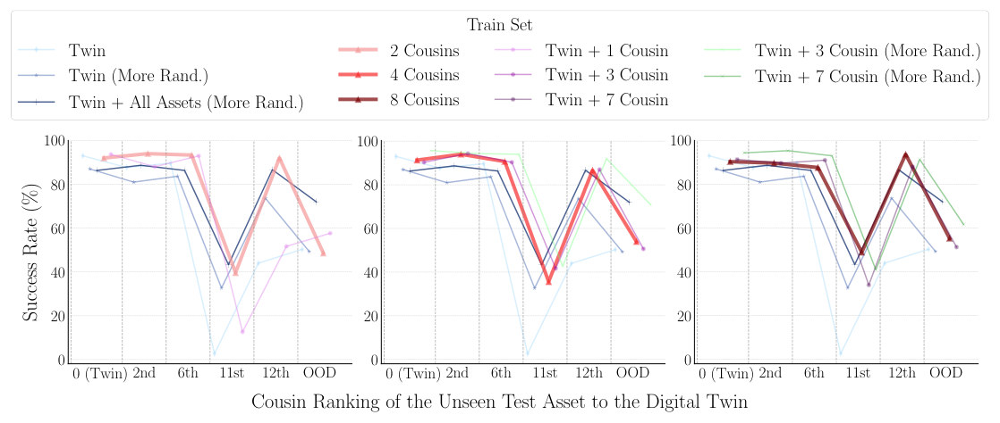
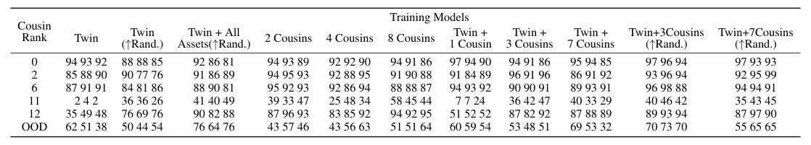
- 说明什么
- 加大随机化有帮助，但追不上 cousin。rank 11：Twin 2.7、Twin ↑Rand 32.7、8 Cousins 49.0。rank 12：44.0、73.7、93.7。Twin 上三者 93.0、87.0、90.3：加随机化掉分最多。OOD 是例外：Twin 50.3、8 Cousins 55.3 差不多，Twin + All Assets (↑Rand) 72.0 反而高，但这一列训练时见过全部测试 asset。
- 在故事里
- 支撑 §3.3 "naive domain randomization alone is insufficient"，以及"twin 不是必需的"：Twin + cousin 和纯 cousin 差不多。
- 指标
- 成功率，3 个 policy（1 组超参 × 3 seed）。
- 怎么评测
- 只在 Door Opening、sim 里。↑Rand 是尺度 ±75%。
- cousin 由 DINO+GPT 选。Twin + Cousin 类训练集：5k 来自 twin，5k 来自 cousin。
- 训练集多达 11 种，但每格只有 3 个 run。
台账Twin 和 Cousin 的每个数字，分别来自哪个比较
| 比较 | 测在哪 | Twin | Cousin | 出处 | 怎么读 |
|---|---|---|---|---|---|
| 真机开门 | 真实 IKEA cabinet，20 次 | 25% | 90% | Fig. 5 | abstract 的数字。Twin + Cousin 95%，Twin + ↑DR 55% |
| 同一批 policy | sim，50 次 | 100% | 94% | Fig. 5 | Twin + Cousin 92%，Twin + ↑DR 70% |
| Door，asset = twin | sim，6 run | 90.0 | 93.2 | Table 4 | 另一台柜子，和上一行的 100% 不是同一比较 |
| Door，d = 7.59 | sim，未见 asset | 67.5 | 93.3 | Table 4 | Door 上差距最大 |
| Door，d = 18.93 | sim，未见 asset | 63.3 | 75.2 | Table 4 | 最远的点，两边都掉 |
| Drawer，asset = twin | sim，6 run | 68.3 | 69.7 | Table 4 | Twin 标准差 27.7，8 Cousins 7.6 |
| Drawer，d = 17.60 | sim，未见 asset | 33.0 | 84.2 | Table 4 | 最远的点，cousin 反而最高 |
| Bowl，asset = twin | sim，5 run | 16.2 | 8.6 | Table 4 | twin 赢的一格 |
| Bowl，d = 14.44 | sim，未见 asset | 0.6 | 23.8 | Table 4 | 绝对值低 |
| Bowl，d = 17.73 | sim，未见 asset | 0 | 0 | Table 4 | 都失败 |
| Door，DINO 第 6 个未见 cousin | sim，6 run | 49.3 | 90.5 | Table 3 | 选法消融，换了一批 run |
| Door，rank 11 | sim，3 run | 2.7 | 49.0 | Table 5 | 最难的 asset |
| Door，OOD | sim，3 run | 50.3 | 55.3 | Table 5 | 基本打平 |
sim 行的 Cousin 列都是 8 Cousins，数字是逐 run 均值（我算的）。Fig. 5 的 Cousin 用几个 cousin 论文没写，项目页视频字幕写 4 个。Twin 在 twin 上的数字有 100%、90.0、92.7（Table 3）、93.0（Table 5）：不同柜子或不同批次，不要互相比。§1 说 cousin "can match" twin，这个说法在 Bowl 的 twin 格没成立。
Limits
局限和开放问题
- 作者自述（§5）：受限于 asset 库的多样性；继承所用大模型的缺陷；policy 学习本身还可以更好（如 diffusion policy）。
- 失败条件（B.3）：高频深度（植物、栅栏）；遮挡（球、毛绒这类光滑物体）；类别名错配（cup、coffee cup、water cup）；类内 asset 太少（BEHAVIOR-1K 只有 1 个 pot、1 个 toaster、2 个 coffee maker）；只建模 "on top"，kettle 在咖啡机里、书在书架上都做不到。
- 不改 asset：检索出来的外观不贴照片（B.4）；库里没有的形状也造不出来（后半句是我的推断）。
- 我的判断，真机证据很窄：有成功率的只有一个任务、一台柜子、每种 policy 20 次；厨房全链路没有数字；长任务只在 sim，单 run 最高 33%。
- 我的判断，核心论据没有量化："twin 贵"没有时间或人力数字；twin 失败的原因（建模还是感知）没有拆开。
- 我的判断，物理没有被检验：asset 自带的 mass、friction、门轴阻尼是否接近真实，论文没谈；physics 随机化只列名字，没给范围。
For Agent-centric real-to-sim
对我们有什么用
- sim-to-real 证据的最小样式：r2s-lite 只回放，还没有这类证据。Fig. 5 就是模板：1 个任务、4 种训练集、sim 50 次、real 20 次。它也是警告：sim 100% 的 policy 真机 25%，所以我们回放 verdict 通过，不等于场景能训出可部署的 policy（后半句是推断）。
- twin 精度和训练分布是两件事：回放原动作要求相机和抓取都对齐（DROID 相机可差约 20 cm），所以 r2s-lite 的 pose fit 和 repair 省不掉。ACDC 不回放，场景本来只求近似（Table 1，sim-to-sim 放置误差 4–16 cm，真实场景没有数字），误差交给随机化和点云观测吸收（推断）。若我们走到训练，可以考虑从一个修好的场景派生多个 cousin；这只在开门这类任务上验证过，DROID 的小物体抓取没有证据。
- 先按 affordance 硬过滤，再比外观：ACDC 只在 articulated asset 里搜，并限定门和抽屉数量（A.7）。这和我们的 role 错误同类，可借鉴"先定功能再选几何"。但它的 role 只有 mounting type 和 on-top，解决不了"取下盖子被当成放进容器"。mass、friction 它也没测，不能为我们的假设值背书。